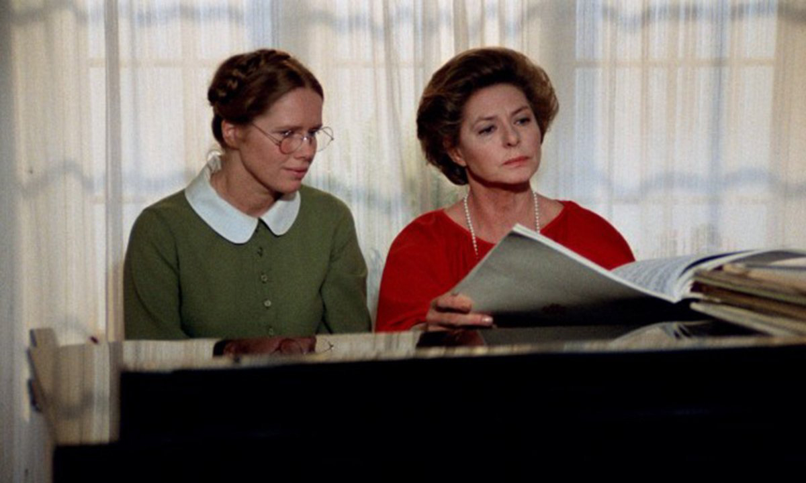
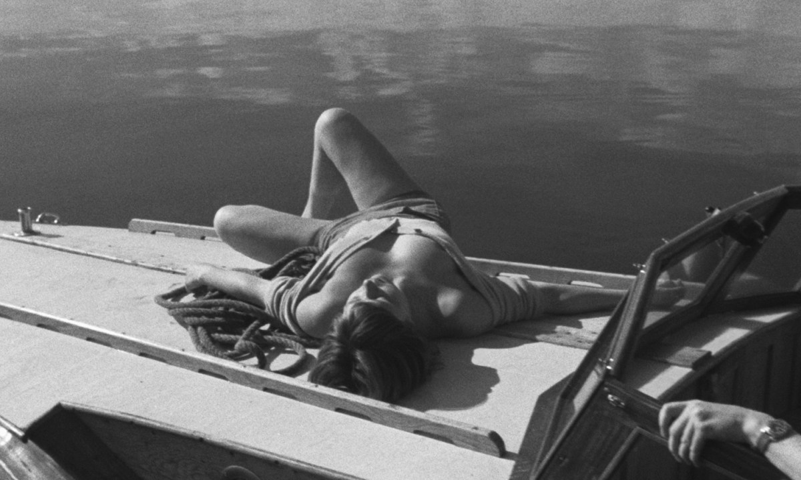

Ингмар Бергман:
как начать смотреть его фильмы
Почему фильмы Бергмана неправильно называть депрессивными? Как подступиться к огромной фильмографии режиссера, состоящей из легких жанровых работ, богоискательских притч, минималистичных психологических драм и пышных костюмных постановок? И что объединяет все эти фильмы?
За почти шесть десятилетий работы в кино Ингмар Бергман создал 64 фильма, включая телевизионные, документальные и короткометражные. Он снимал по картине, иногда двум, в год. По работоспособности с ним могут сравниться немногие: Райнер Вернер Фассбиндер (44 фильма), Вуди Аллен (54 фильма) и Жан-Люк Годар (рекордные и с трудом укладывающиеся в голове 128 фильмов).
С чего же начать — с легких жанровых работ, суровых богоискательских притч, минималистичных психологических драм или пышных костюмных постановок? И как за этим разнообразием разглядеть сквозные мотивы и приемы одного из главных представителей авторского кино, которые, как принято считать, всю жизнь снимают один и тот же фильм?
Первое, что нужно сделать, — это отбросить стереотип о Бергмане как о депрессивном режиссере, переносящем на экран исключительно свои травмы, кризисы и экзистенциальную тоску. Тоски в фильмах Бергмана действительно достаточно, но еще в них много юмора, жизнелюбия и неуемного желания разобраться в том, как устроено мироздание и его самая прекрасная часть — человек.
С чего начать

Лучше всего начать с «Осенней сонаты» (1978), поздней картины, получившей «Золотой глобус», три приза Национального совета кинокритиков США и премию «Давид ди Донателло». Эта камерная драма притягивает как магнит, ее хочется пересматривать, обсуждать с друзьями, спорить до хрипоты и снова возвращаться к ней спустя годы.
Бергман использует универсальную историю и рассказывает ее внятным жанровым языком, предельно обостряя все конфликты. Пожилая пианистка Шарлотта и ее взрослая дочь Эва, жена пастора, семь лет были в ссоре и не виделись. Эва решает сделать первый шаг и приглашает мать к себе в глухую деревню. Шарлотта не подозревает, что ее ждет сюрприз: Эва забрала из клиники парализованную младшую сестру, которую мать фактически там бросила. Шарлотта и рада встрече, и испытывает немыслимые муки совести. А еще ее разбирает злость: старшая дочь фактически заменила младшей исчезнувшую мать, и невинное приглашение провести небольшой отпуск в деревне по факту оказалось повесткой в суд.
Бергман упаковывает в оболочку социальной драмы драму психологическую: конфликт матери и дочери становится спусковым механизмом — один за другим обнажаются застарелые внутренние противоречия, недовольство собой и отчаянные попытки переложить ответственность за свою жизнь на другого. 36-минутная кульминация, когда мать и дочь играют в психологический пинг-понг, бросая друг другу (а по факту самим себе) страшные обвинения и запоздало оправдываясь, — одна из самых сильных сцен в мировом кино. И хотя на первый взгляд в ней нет ничего особенного — две женщины просто сидят за столом и разговаривают, — оторваться невозможно. В этом фильме особенно заметно удивительное мастерство Бергмана, еще и выдающегося театрального режиссера, насытить кадр не внешним, а внутренним действием — намного более мощным, чем погони, взрывы и катастрофы.
Этого эффекта он достигает с помощью двух актрис — Лив Ульман, одной из своих любимых исполнительниц, и Ингрид Бергман, однофамилицы режиссера, легенды американского кино, снимавшейся в «Касабланке» Майкла Кёртица, «Газовом свете» Джорджа Кьюкора, «Дурной славе» Альфреда Хичкока. Как и должно быть в драме, обе стороны в чем-то правы и в чем-то виноваты. При каждом следующем просмотре зритель замечает новые свидетельства этой вины и этой правоты, ранее не замеченные нюансы психологической дуэли. Фильм словно сканирует повзрослевшего, изменившегося тебя и побуждает к переоценке собственной жизни.
Что смотреть дальше

Следом за «Осенней сонатой» можно посмотреть две ранние картины, в которых Бергман также работает с устойчивыми и привычными жанровыми схемами. «Лето с Моникой» (1953) — мелодрама с Харриет Андерссон, еще одной великой бергмановской актрисой. Жан-Люк Годар считал, что «Лето с Моникой» дало толчок будущим «новым волнам», которые захлестнут кинематограф спустя несколько лет, на рубеже 1950–60-х: «Его камера стремится только к одному: поймать настоящее мгновение в самой своей мимолетности и углубить его так, чтобы придать ценность вечности» . Сам же Бергман, ни к какой из «новых волн» никогда не примыкавший, после «Лета с Моникой» пойдет в другую сторону: снимет комедию «Улыбки летней ночи» (1955), в которой вернется к своей любимой театральной эстетике. Эта картина станет первым международным триумфом режиссера — она получит приз Каннского кинофестиваля за лучшую лирическую комедию.
После этой солнечной комедии можно отправиться на залитую лунным светом территорию хоррора и посмотреть «Час волка» (1968) — единственный бергмановский фильм ужасов и первый фильм трилогии, снятой на шведском острове Форё и помимо «Часа волка» включающей «Стыд» (1968) и «Страсть» (1969). Во всех трех фильмах главные роли исполнили уже знакомая нам Лив Ульман и один из любимых бергмановских актеров Макс фон Сюдов.
Затем можно вернуться на десять лет назад и посмотреть две притчевые картины, главные роли в которых тоже сыграл Макс фон Сюдов: «Седьмая печать» (1957, особый приз жюри Каннского кинофестиваля) и «Девичий источник» (1960, премия «Оскар» в номинации «Лучший фильм на иностранном языке»). Действие этих мрачных историй разворачивается в средневековой Швеции, а сюжет связан со смертью. В первом случае Смерть — полноценный персонаж фильма (прекрасная роль Бенгта Экерота, создавшего один из самых ярких образов смерти в мировом кино), во втором она уносит жизнь любимой дочери главного героя. При этом в обоих фильмах смерть означает не финал, а новое начало: в «Девичьем источнике» на месте гибели героини начинает бить ключ с чистой родниковой водой, а «Седьмая печать» заканчивается веселым танцем со Смертью, который спародировал Вуди Аллен, большой поклонник Бергмана, в «Любви и смерти» (1975).
Эти метафорические картины объясняют, что имел в виду Бергман, когда называл одну из своих главных работ — «Шепоты и крики» (1972) — фильмом-утешением. Казалось бы, о каком утешении может идти речь — ведь повествование наполнено ожиданием смерти в душном герметичном пространстве роскошного усадебного дома XIX века. Но важно то, как режиссер заканчивает фильм — словно отматывает ленту времени назад, к состоянию счастья и безмятежности.